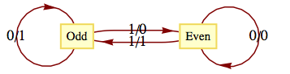
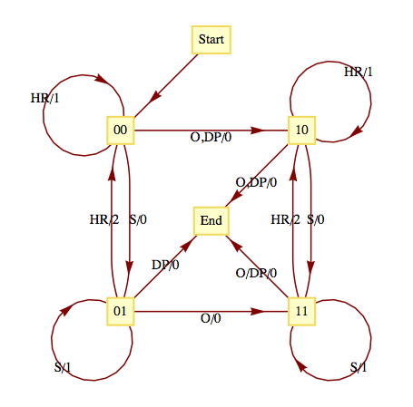
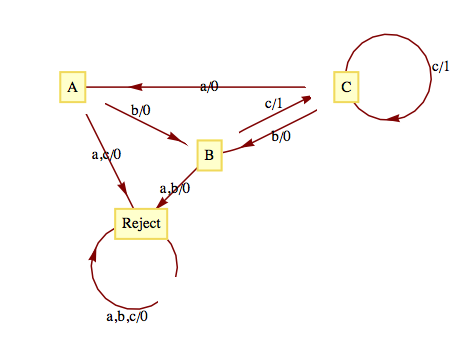
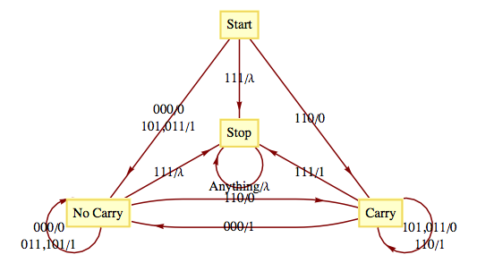
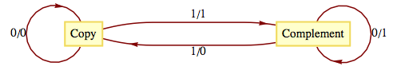

Ken Levasseur, Al Doerr, Michiel Smid, Oscar Levin, Charles M. Grinstead, J. Laurie Snell, Eric Lehman, F. Thomson Leighton, Albert R Meyer, Jeff Erickson, Kenneth P. Bogart, Carol Chritchlow, David Eck, OpenDSA Project, L.J. Miller
In this section, we will introduce the concept of an abstract machine. The machines we will examine will (in theory) be capable of performing many of the tasks associated with digital computers. One such task is solving the recognition problem for a language. We will concentrate on one class of machines, finite-state machines (finite automata). And we will see that they are precisely the machines that are capable of recognizing strings in a regular grammar.
Given an alphabet \(X\text{,}\) we will imagine a string in \(X^*\) to be encoded on a tape that we will call an input tape. When we refer to a tape, we might imagine a strip of material that is divided into segments, each of which can contain either a letter or a blank.
The typical abstract machine includes an input device, the read head, which is capable of reading the symbol from the segment of the input tape that is currently in the read head. Some more advanced machines have a read/write head that can also write symbols onto the tape. The movement of the input tape after reading a symbol depends on the machine. With a finite-state machine, the next segment of the input tape is always moved into the read head after a symbol has been read. Most machines (including finite-state machines) also have a separate output tape that is written on with a write head. The output symbols come from an output alphabet, \(Z\text{,}\) that may or may not be equal to the input alphabet. The most significant component of an abstract machine is its memory structure. This structure can range from a finite number of bits of memory (as in a finite-state machine) to an infinite amount of memory that can be stored in the form of a tape that can be read from and written on (as in a Turing machine).
Definition15.3.1.Finite-State Machine.
A finite-state machine is defined by a quintet \((S, X, Z, w, t)\) where
\(S=\{s_1, s_2,\ldots , s_r\}\) is the state set, a finite set that corresponds to the set of memory configurations that the machine can have at any time.
\(X=\{x_1, x_2, \ldots ,x_m\}\) is the input alphabet.
\(Z=\{z_1,z_2, \ldots ,z_n\}\) is the output alphabet.
\(w: X\times S \to Z\) is the output function, which specifies which output symbol \(w(x, s) \in Z\) is written onto the output tape when the machine is in state \(s\) and the input symbol \(x\) is read.
\(t:X\times S\to S\) is the next-state (or transition) function, which specifies which state \(t(x, s) \in S\) the machine should enter when it is in state \(s\) and it reads the symbol \(x\text{.}\)
Many mechanical devices, such as simple vending machines, can be thought of as finite-state machines. For simplicity, assume that a vending machine dispenses packets of gum, spearmint (S), peppermint (P), and bubble (B), for \(25\) cents each. We can define the input alphabet to be
and the state set to be \(\{\textrm{Locked},
\textrm{ Select}\}\text{,}\) where the deposit of a quarter unlocks the release mechanism of the machine and allows you to select a flavor of gum. We will leave it to the reader to imagine what the output alphabet, output function, and next-state function would be. You are also invited to let your imagination run wild and include such features as a coin-return lever and change maker.
The following machine is called a parity checker. It recognizes whether or not a string in \(B^*\) contains an even number of 1s. The memory structure of this machine reflects the fact that in order to check the parity of a string, we need only keep track of whether an odd or even number of 1's has been detected.
The input alphabet is \(B=\{0,1\}\) and the output alphabet is also \(B\text{.}\) The state set is \(\{even, odd\}\text{.}\) The following table defines the output and next-state functions.
Note how the value of the most recent output at any time is an indication of the current state of the machine. Therefore, if we start in the even state and read any finite input tape, the last output corresponds to the final state of the parity checker and tells us the parity of the string on the input tape. For example, if the string 11001010 is read from left to right, the output tape, also from left to right, will be 10001100. Since the last character is a 0, we know that the input string has even parity.
An alternate method for defining a finite-state machine is with a transition diagram. A transition diagram is a directed graph that contains a node for each state and edges that indicate the transition and output functions. An edge \(\left(s_i,s_j\right)\) that is labeled \(x/z\) indicates that in state \(s_i\) the input \(x\) results in an output of \(z\) and the next state is \(s_j\text{.}\) That is, \(w\left(x, s_i\right)=z\) and \(t\left(x, s_i\right)=s_j\text{.}\) The transition diagram for the parity checker appears in Figure 15.3.4. In later examples, we will see that if there are different inputs, \(x_i\) and \(x_j\text{,}\) while in the same state resulting in the same transitions and outputs, we label a single edge \(x_i, \left.x_j\right/z\) instead of drawing two edges with labels \(\left.x_i\right/z\) and \(\left.x_j\right/z\) .

Figure15.3.4.Transition Diagram for a Parity Checker
One of the most significant features of a finite-state machine is that it retains no information about its past states that can be accessed by the machine itself. For example, after we input a tape encoded with the symbols 01101010 into the parity checker, the current state will be even, but we have no indication within the machine whether or not it has always been in even state. Note how the output tape is not considered part of the machine's memory. In this case, the output tape does contain a “history” of the parity checker's past states. We assume that the finite-state machine has no way of recovering the output sequence for later use.
Consider the following simplified version of the game of baseball. To be precise, this machine describes one half-inning of a simplified baseball game. Suppose that in addition to home plate, there is only one base instead of the usual three bases. Also, assume that there are only two outs per inning instead of the usual three. Our input alphabet will consist of the types of hits that the batter could have: out (O), double play (DP), single (S), and home run (HR). The input DP is meant to represent a batted ball that would result in a double play (two outs), if possible. The input DP can then occur at any time. The output alphabet is the numbers 0, 1, and 2 for the number of runs that can be scored as a result of any input. The state set contains the current situation in the inning, the number of outs, and whether a base runner is currently on the base. The list of possible states is then 00 (for 0 outs and 0 runners), 01, 10, 11, and end (when the half-inning is over). The transition diagram for this machine appears in Figure 15.3.6

Figure15.3.6.Transition Diagram for a simplified game of baseball
Let's concentrate on one state. If the current state is 01, 0 outs and 1 runner on base, each input results in a different combination of output and next-state. If the batter hits the ball poorly (a double play) the output is zero runs and the inning is over (the limit of two outs has been made). A simple out also results in an output of 0 runs and the next state is 11, one out and one runner on base. If the batter hits a single, one run scores (output = 1) while the state remains 01. If a home run is hit, two runs are scored (output = 2) and the next state is 00. If we had allowed three outs per inning, this graph would only be marginally more complicated. The usual game with three bases would be quite a bit more complicated, however.
As we mentioned at the outset of this section, finite-state machines can recognize strings in a regular language. Consider the language \(L\) over \(\{a,b,c\}\) that contains the strings of positive length in which each \(a\) is followed by \(b\) and each \(b\) is followed by \(c\text{.}\) One such string is \(bccabcbc\text{.}\) This language is regular. A grammar for the language would be nonterminal symbols \(\{A,B,C\}\) with starting symbol \(C\) and production rules \(A\to bB\text{,}\)\(B\to
cC\text{,}\)\(C\to aA\text{,}\)\(C\to bB\text{,}\)\(C \to cC\text{,}\)\(C \to c\text{.}\) A finite-state machine (Figure 15.3.8) that recognizes this language can be constructed with one state for each nonterminal symbol and an additional state (Reject) that is entered if any invalid production takes place. At the end of an input tape that encodes a string in \(\{a,b,c\}^*\text{,}\) we will know when the string belongs to \(L\) based on the final output. If the final output is 1, the string belongs to \(L\) and if it is 0, the string does not belong to \(L\text{.}\) In addition, recognition can be accomplished by examining the final state of the machine. The input string belongs to the language if and only if the final state is \(C\text{.}\)

Figure15.3.8.
The construction of this machine is quite easy: note how each production rule translates into an edge between states other than Reject. For example, \(C\to bB\) indicates that in State \(C\text{,}\) an input of \(b\) places the machine into State \(B\text{.}\) Not all sets of production rules can be as easily translated to a finite-state machine. Another set of production rules for \(L\) is \(A\to aB\text{,}\)\(B\to bC\text{,}\)\(C\to
cA\text{,}\)\(C\to cB\text{,}\)\(C\to cC\) and \(C\to c\text{.}\) Techniques for constructing finite-state machines from production rules is not our objective here. Hence we will only expect you to experiment with production rules until appropriate ones are found.
A finite-state machine can be designed to add positive integers of any size. Given two integers in binary form, \(a=a_na_{n-1} \cdots a_1a_0\) and \(b=b_n b_{n-1}\cdots
b_1b_0\text{,}\) the machine take as its input sequence the corresponding bits of \(a\) and \(b\) reading from right to left with a “parity bit” added
Notice the special input 111 at the end. All possible inputs except the last one must even parity (contain an even number of ones). The output sequence is the sum of \(a\) and \(b\text{,}\) starting with the units digit, and comes from the set \(\{0,1,\lambda \}\text{.}\) The transition diagram for this machine appears in Figure 15.3.10.

Figure15.3.10.Transition Diagram for a binary adder
ExercisesExercises
1.
Draw a transition diagram for the vending machine described in Example 15.3.2.
What input sequence would be used to compute the sum of 1101 and 0111 (binary integers)? What would the output sequence be?
5.
The Gray Code Decoder. The finite-state machine defined by the following figure has an interesting connection with the Gray Code.

Figure15.3.12.Gray Code Decoder
Given a string \(x=x_1x_2\cdots x_n\in B^n\text{,}\) we may ask where \(x\) appears in \(G_n\text{.}\) Starting in Copy state, the input string \(x\) will result in an output string \(z\in B^n\text{,}\) which is the binary form of the position of \(x\) in \(G_n\text{.}\) Recall that positions are numbered from 0 to \(2^n-1\text{.}\)
In what positions \((0-31)\) do 10110, 00100, and 11111 appear in \(G_5\text{?}\)
Input: 10110, Output: 11011 \(\Rightarrow\) 10110 is in position 27
Input: 00100, Output: 00111 \(\Rightarrow\) 00100 is in position 7
Input:11111, Output: 10101 \(\Rightarrow\) 11111 is in position 21
Let \(x=x_1x_2\ldots x_n\) and recall that for \(n\geq 1\text{,}\)\(G_{n+1}=\left(
\begin{array}{c}
0G_n \\
1G_n^r \\
\end{array}
\right)\text{,}\) where \(G_n^r\) is the reverse of \(G_n\text{.}\) To prove that the Gray Code Decoder always works, let \(p(n)\) be the proposition “Starting in Copy state, \(x\)'s output is the position of \(x\) in \(G_n\text{;}\) and starting in Complement state, \(x\)'s output is the position of \(x\) in \(G_n^r\) .” That p(1) is true is easy to verify for both possible values of \(x\text{,}\) 0 and 1. Now assume that for some \(n\geq 1\text{,}\)\(p(n)\) is true and consider \(x=x_1x_2\ldots x_nx_{n+1}\text{.}\)
If \(x_1=0\text{,}\)\(x\)'s output is a zero followed by the output for \(\left(x_2\ldots x_nx_{n+1}\right)\) starting in Copy state. By the induction hypothesis, this is zero followed by the position of \(\left(x_2 \ldots x_n x_{n+1}\right)\) in \(G_n\text{,}\) which is the position of \(x\) in \(G_{n+1}\text{,}\) by the definition of \(G\text{.}\)
If \(x_1=1\text{,}\)\(x\)'s output is a one followed by the output for \(\left(x_2\ldots x_nx_{n+1}\right)\) starting in Complement state. By the induction hypothesis, this is one followed by the position of \(\left(x_2\ldots x_nx_{n+1}\right)\) in \(G_n^r\text{,}\) which is the position of \(x\) in \(G_{n+1}\text{,}\) by the definition of \(G\text{.}\)\(\square\)